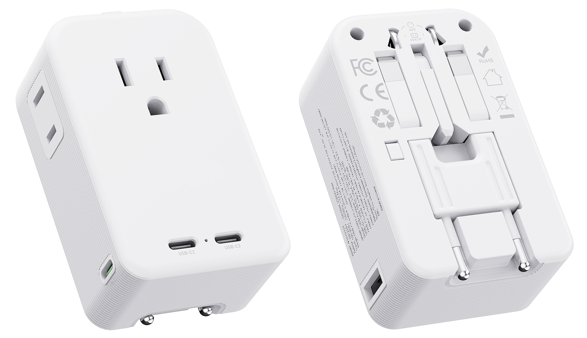

This engineering note records sustained full-load operation of the NT011 70W GaN platform and the measured surface-temperature result.

| Item | Recorded Value |
|---|---|
| Platform | NT011 70W GaN travel adapter family |
| Load condition | 70W full-load operation |
| Duration | 1 hour |
| Maximum surface temperature | 72°C |
| Result type | Measured surface temperature, not temperature rise |
Confirm operation at the defined 70W load condition for the planned duration.
Observe enclosure surface temperature under sustained high-power charging.
Verify output behavior and power-delivery operation according to the final product configuration.
Inspect housing, connectors, plug mechanism and product function after the load test.
High-power travel adapters combine charging electronics, international plug mechanisms and a compact enclosure. Surface temperature is one practical indicator of how the product manages internally generated heat during sustained operation.
For a 70W platform, thermal design must be considered together with product thickness, component placement, user touch surfaces, safety clearances and long-term reliability.
Reducing product thickness can improve portability and move the center of gravity closer to the wall, but it also reduces the internal volume available for heat spreading. This is why high-power flat travel adapters require coordinated electrical and mechanical engineering.
When comparing 70W travel adapter suppliers, ask for the load level, duration, ambient condition, measurement location and whether the stated thermal result is a surface temperature or temperature rise. A clear test definition is more useful than a single isolated number.
The internal test record states a maximum measured surface temperature of 72°C during the one-hour 70W full-load test.
No. The supplied record identifies 72°C as the measured surface temperature.
No. It is an internal engineering test record and does not replace formal certification or compliance testing.